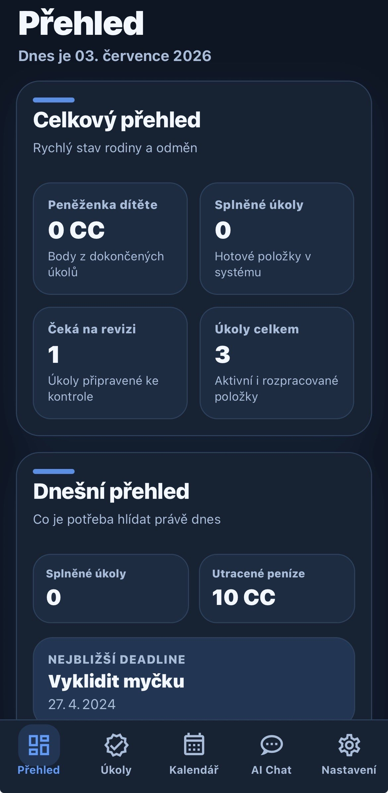
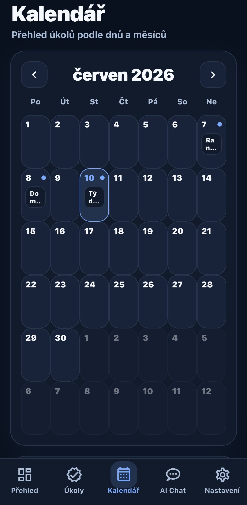
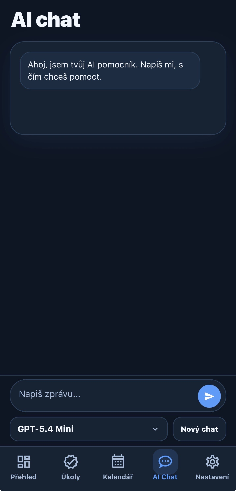
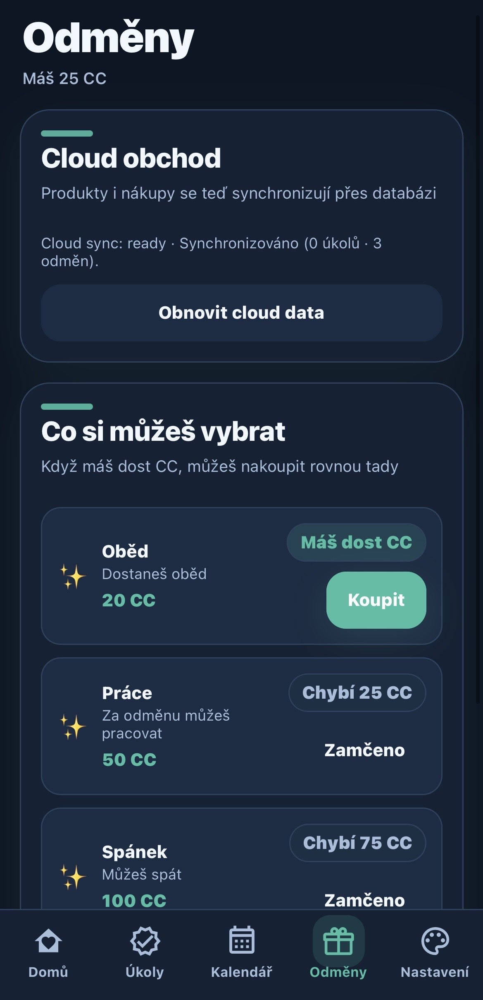

Konec rodinných hádek kvůli povinnostem
CAIK Spokojená Rodina je váš nový rodinný asistent. Propojuje správu úkolů, systém odměn a chytrou AI, aby děti vedl k zodpovědnosti a rodičům šetřil nervy.
Jednoduchý systém pro celou rodinu
Rodič nastaví pravidla
Rodič vytvoří rodinu, zadá primární i rozvojové úkoly a nastaví odměny podle potřeb domácnosti.
Dítě se bezpečně připojí
Rodinný kód propojí rodičovské a dětské prostředí. Každý vidí přehled přizpůsobený své roli.
Dítě plní své úkoly
Dítě má jasný plán toho, co má daný den splnit, a za dokončené úkoly získává CAIK Coins (CC).
Odměna přijde po schválení
Rodič má vše pod kontrolou. Po schválení splněného úkolu může dítě své mince utratit v rodinném obchodě.
Přímo z aplikace
Podívejte se, jak CAIK Spokojená Rodina vypadá
Skutečné obrazovky aplikace ukazují přehled úkolů, odměn, kalendáře i rodinného prostředí.




CAIK Spokojená Rodina pomáhá rodičům i dětem
Pro rodiče
Jednoduše plánujte povinnosti a rozvojové úkoly, nastavujte pravidla a odměny a mějte přehled o tom, co je hotové, co čeká na splnění a co je potřeba schválit.
Pro děti
V bezpečném a přehledném prostředí dítě přesně vidí svůj denní plán. Za splněné úkoly získává CAIK Coins a samo si vybírá z odměn schválených rodičem.
Pro celou rodinu
Společný kalendář a jasně nastavená pravidla pomáhají rodině držet režim, motivaci i pořádek bez zbytečných dohadů.
Vše důležité na jednom místě
Úkoly a pravidla
Rodič zadává primární povinnosti i rozvojové úkoly a nastavuje, co má dítě splnit v daný den, týden nebo termín.
CAIK Coins a odměny
Za dokončené úkoly dítě získává virtuální měnu CAIK Coins (CC). Rodič předem schválí odměny a jejich cenu v rodinném obchodě.
Rodinný kalendář
Úkoly a termíny jsou přehledně zobrazené v kalendáři, takže všichni vědí, co je čeká dnes, tento týden i v dalších dnech.
Bezpečný AI pomocník
AI chat může rodičům navrhovat nové úkoly nebo odměny. Žádná zásadní akce se neprovede bez potvrzení rodiče.
Oddělené role
Rodičovské a dětské prostředí jsou bezpečně propojená rodinným kódem a každé je přizpůsobené potřebám dané role.
Více klidu doma
CAIK Spokojená Rodina pomáhá převést domluvená pravidla do jasného systému, který podporuje zodpovědnost dětí a ulehčuje organizaci rodičům.
Máte dotaz nebo zájem o spolupráci?
Napište nám. Ozveme se co nejdříve.